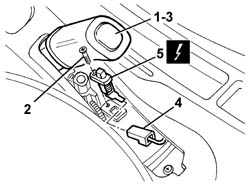

5550D18 HANDBRAKE ON WARNING LIGHT SWITCH - R+R
- Path
- Procedures > 55 ELECTRICAL EQUIPMENT > 5550 WARNING AND MANOEUVRING INDICATORS > 5550D BRAKE AND REVERSING LIGHTS > 5550D18 HANDBRAKE ON WARNING LIGHT SWITCH - R+R
- Kind
- repair procedure (removal / refitting; the operation number is the code)
- Applies to
- all engines; all production periods
- Interactive page
- https://sloeber94.github.io/elrnDB-aGt/en/#/125001699
Applies to: all engines; all production periods
 Removing
Removing
 Refitting
RefittingOp. 3380A44 HANDBRAKE/LINKAGE PROTECTION - R+R
1. Place the handbrake in a lowered position in order to be able to gain access to the switch fixing bolts.
2. Using a screwdriver, undo the bolt fixing the switch.
3. Lift up the handbrake lever.
4. Move the switch slightly and disconnect the electrical connection.
Name | Connector | |
|---|---|---|
5 | Handbrake switch | See I40 HANDBRAKE SWITCH |
5. Recover the switch.

Applies to: all engines; all production periods
Refitting
RemovingCheck that the switch is not damaged and, if necessary, conduct an electrical test on it.
Connect the electrical connection to the switch.
Position the switch, then lower the handbrake lever on the actual switch to keep it securely in place.
Using a screwdriver, tighten the bolt fixing the switch.
Check the operation of the handbrake warning light.